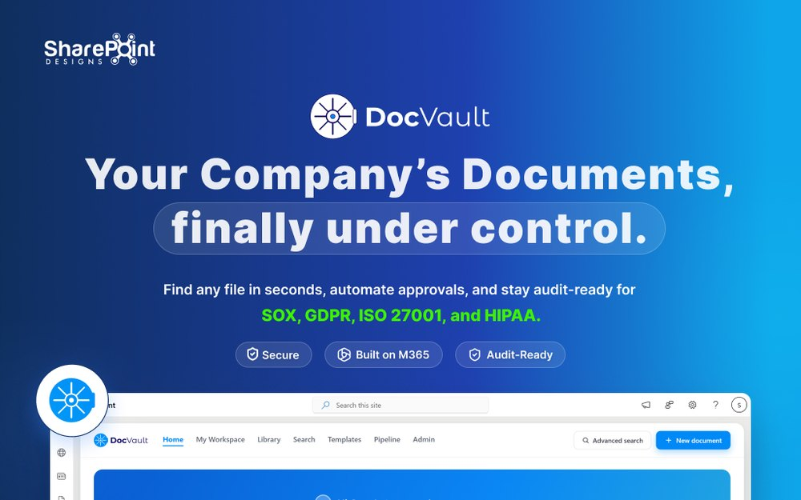

Three problems, told properly.
Each of these is a full case study: the research, the wrong turns, the decisions I'd defend and the ones I'd revisit.
NutriDash
People order food they can't see the contents of. NutriDash puts the ingredients back in front of the person eating them, without turning dinner into a spreadsheet.

Fuel Buddy
Fuel prices change daily and nobody knows where the cheap pump is until they've already driven past it. A small app for a decision people make weekly and think about for ten seconds.

DocVault AI
The closest to my day job: thousands of documents, no shared vocabulary for finding them. An AI layer is only useful here if it earns trust faster than the search bar it replaces.
